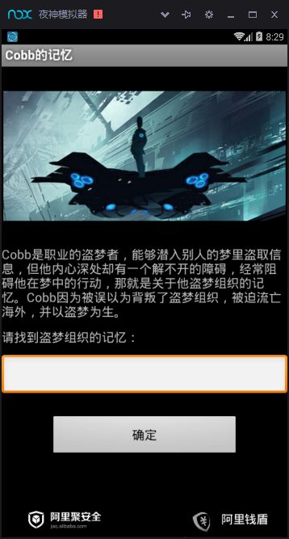
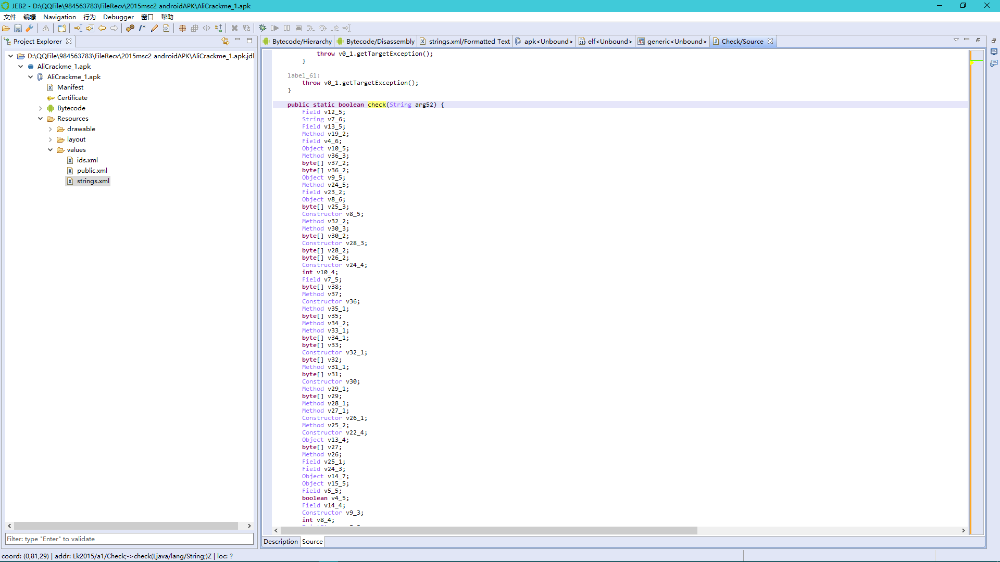
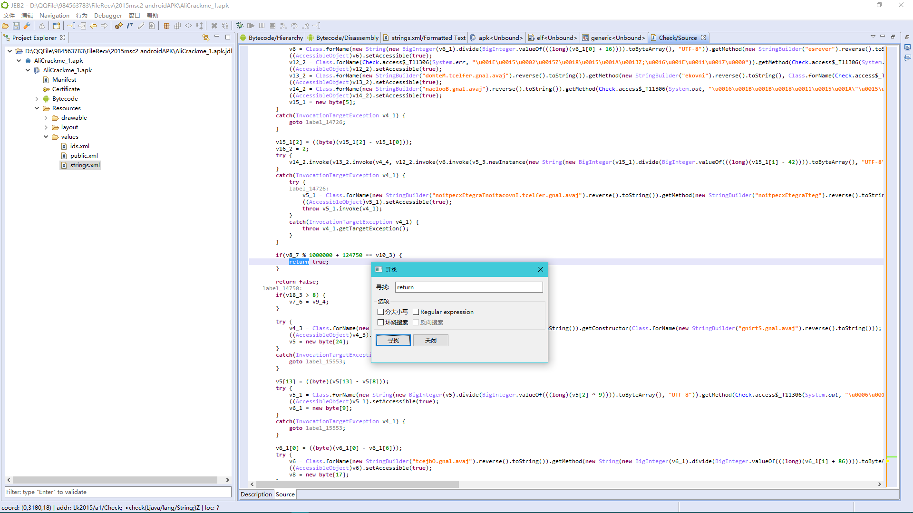
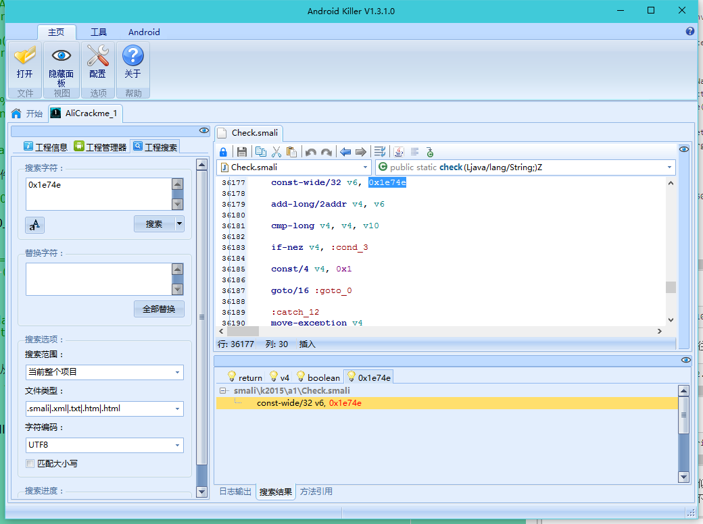
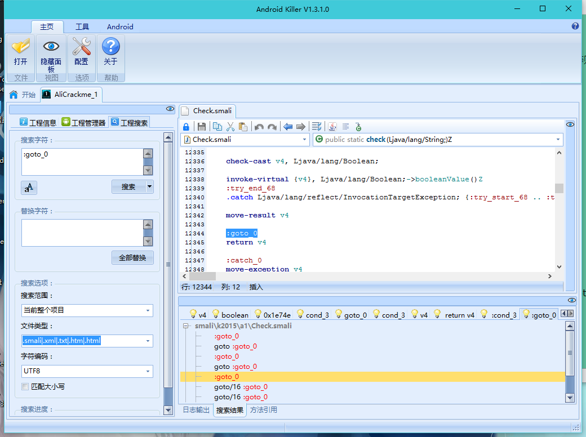
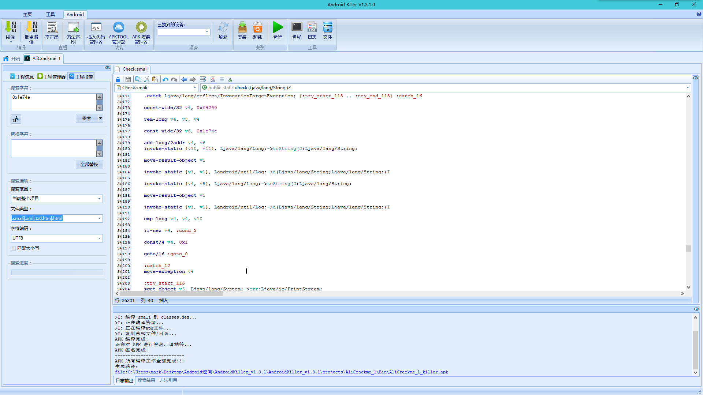
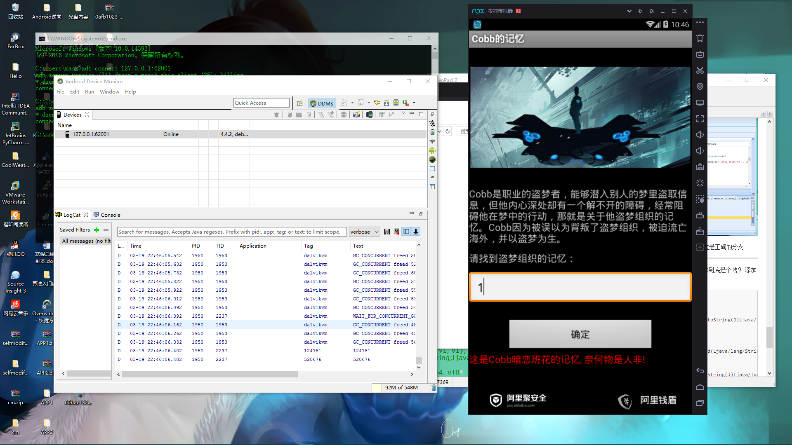
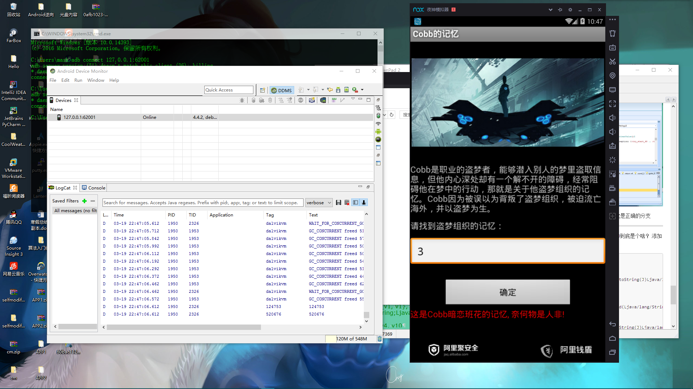
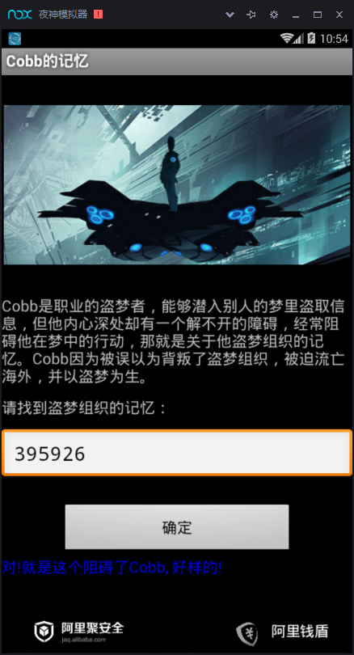

首先拖入jeb进行分析： 常规流程，先查看AndroidMainfest.xml文件
<?xml version="1.0" encoding="utf-8"?>
<manifest package="k2015.a1" platformBuildVersionCode="10" platformBuildVersionName="2.3.3" xmlns:android="http://schemas.android.com/apk/res/android">
<application android:icon="@drawable/icon" android:label="@string/app_name">
<activity android:label="@string/app_name" android:name="Main">
<intent-filter>
<action android:name="android.intent.action.MAIN" />
<category android:name="android.intent.category.LAUNCHER" />
</intent-filter>
</activity>
</application>
</manifest>
入口为Main类，跟进去
package k2015.a1;
import android.app.Activity;
import android.os.Bundle;
import android.os.Handler;
import android.os.Looper;
import android.os.Message;
import android.view.View$OnClickListener;
import android.view.View;
import android.widget.Button;
import android.widget.TextView;
public class Main extends Activity {
class k2015.a1.Main$1 extends Handler { //新建了一个Handler类，用于消息传递
k2015.a1.Main$1(Main arg1, Looper arg2) { //分别传递一个Main类和一个Looper类，Looper类的loop()方法用于读取消息队列中的消息，读完消息后，将消息发送给Handler处理
Main.this = arg1;
super(arg2);
}
public void handleMessage(Message arg5) {
Main.this.btn.setEnabled(true);
switch(arg5.what) { //what为指定值的消息
case 0: {
goto label_7; //正确分支
}
case 3: {
goto label_24;
}
}
return;
label_7:
Main.this.tv.setTextColor(-16776961);
try {
Main.this.tv.setText(103 / arg5.what);
}
catch(Exception v0) {
Main.this.tv.setText(2130968581);//成功显示，对!就是这个阻碍了Cobb, 好样的!，可以查找对应的资源文件
}
return;
label_24:
Main.this.tv.setTextColor(-65536);
Main.this.tv.setText(2130968580);
}
}
Button btn;
Button btn2;
private Handler handler;
TextView tv;
public Main() {
super();
this.handler = new k2015.a1.Main$1(this, Looper.myLooper());
}
static Handler access$000(Main arg1) {
return arg1.handler;
}
public void onCreate(Bundle arg4) {
super.onCreate(arg4);
this.setContentView(2130903040);
this.btn = this.findViewById(2131034115);
this.tv = this.findViewById(2131034116);
this.btn.setOnClickListener(new View$OnClickListener(this.findViewById(2131034114)) {
public void onClick(View arg4) {
Main.this.btn.setEnabled(false);
new Thread(this.val$text.getText().toString()) { //创建一个线程类
public void run() {
int v1;
Handler v3;
int v2 = 3;
try {
v3 = this.this$1.this$0.handler;
if(Check.check(this.val$in)) { //输入值传入Check.check()方法
v1 = 0;
}
else {
goto label_10;
}
goto label_8;
}
catch(Exception v0) {
goto label_13;
}
label_10:
v1 = v2;
try {
label_8:
v3.sendEmptyMessage(v1); //发送0
}
catch(Exception v0) {
label_13:
v0.printStackTrace();
this.this$1.this$0.handler.sendEmptyMessage(v2); //发送3
}
}
}.start();
}
});
}
}
那么思路很清晰了，我们需要Check.check(输入的值),然后返回真即可，那么跟进分析Check.check方法 这里可以发现这里添加了很多混淆：

那么换个角度分析下，这个Check.check()方法必然会返回一个Boolean值，那么，ctrl+F开启搜索，发现有四处返回了值，判断一下，那么很显然，这里是正确的分支：

那么这里便是关键代码：
try {
v14_2.invoke(v13_2.invoke(v4_4, v12_2.invoke(v6.invoke(v5_3.newInstance(new String(new BigInteger(v15_1).divide(BigInteger.valueOf(((long)(v15_1[1] - 42)))).toByteArray(), "UTF-8")))), v7_4)).booleanValue();
}
catch(InvocationTargetException v4_1) {
try {
label_14726:
v5_1 = Class.forName(new StringBuilder("noitpecxEtegraTnoitacovnI.tcelfer.gnal.avaj").reverse().toString()).getMethod(new StringBuilder("noitpecxEtegraTteg").reverse().toString(), null);
((AccessibleObject)v5_1).setAccessible(true);
throw v5_1.invoke(v4_1);
}
catch(InvocationTargetException v4_1) {
throw v4_1.getTargetException();
}
}
if(v8_7 % 1000000 + 124750 == v10_3) {
return true;
}
return false;
可以看到判断条件为
v8_7 % 1000000 + 124750 == v10_3
那么v8_7和v10_3分别是啥呢？，往上翻，可以发现上面只有这一处调用了：
long v8_7 = v12_2.invoke(v9_2.invoke(v5_4, v8_2.invoke(v4_4, v16_3, v6.invoke(null, Integer.valueOf(((int)(7 + (1 + v10_3) * v10_3 * (2 + v10_3) % 6))))))).longValue();
这是v12_2:
v12_2 = Class.forName(new StringBuilder("gnoL.gnal.avaj").reverse().toString()).getMethod(new String(new BigInteger(v12_1).divide(BigInteger.valueOf(((long)(58 - v12_1[6])))).toByteArray(), "UTF-8"), null);
开始想的是要么从算法下手，但是似乎这道题干扰项太多，所以试试利用插桩法，直接将v8_7和v10_3的值打印出来，似乎这样更加简便快捷，那么我们换个工具下手，因为JEB并不支持添加smali代码
打开AndroidKiller，搜索124750，会发现搜不到，那么转换为十六进制，也就是0x1e74e,看看哪里调用了：

那么来分析这一块的调用：
cmp-long v4, v4, v10
if-nez v4, :cond_3
const/4 v4, 0x1
goto/16 :goto_0
这里有一个关键的比较
第一句
cmp-long v4, v4, v10
比较v4和v10,如果v4>v10，则返回1，相等则返回0，小于则返回-1，并将返回值保存到v4寄存器
第二句
if-nez v4, :cond_3
如果v4不等于0，则执行条件三
:cond_3
const/4 v4, 0x0
goto/16 :goto_0
条件三，将v4值赋为0
第三句
const/4 v4, 0x1
v4等于0，那么将v4赋值1
可以发现这里最后都要跳转执行goto/16:goto_0 那么，这一步干了什么呢？，继续跟踪

那么分析一下，发现只有这里返回了v4，那么显然这是正确的分支
好，思路大致理清楚了，现在开始插桩，看看v4,v10到底是个啥？ 添加几行代码：
const-wide/32 v6, 0x1e74e
add-long/2addr v4, v6
invoke-static {v10, v11}, Ljava/lang/Long;->toString(J)Ljava/lang/String;//因为v10是long类型，值需要两个寄存器保存，此处将v10，v11寄存器保存的值转换为字符串
move-result-object v1 //返回给v1
invoke-static {v1, v1}, Landroid/util/Log;->d(Ljava/lang/String;Ljava/lang/String;)I //打印v1
//v4同理
invoke-static {v4, v5}, Ljava/lang/Long;->toString(J)Ljava/lang/String;
move-result-object v1
invoke-static {v1, v1}, Landroid/util/Log;->d(Ljava/lang/String;Ljava/lang/String;)I
cmp-long v4, v4, v10
if-nez v4, :cond_3
const/4 v4, 0x1
goto/16 :goto_0
那么下面保存后反编译

反编译成功，下面打开DDMS，开始分析运行：
我分三次，分别输入了1，2，3作为输入值，结果如下：


可以发现v10的值为124750+输入的值，v4的值恒不变，为520676，那么还记得刚才的判断么，我们要让他返回true，那么v4就要为0，那么我们就需要v4,v10相等，那么表达式就是
124750+输入 == 520676，那么输入值即为395926

成功！！！！